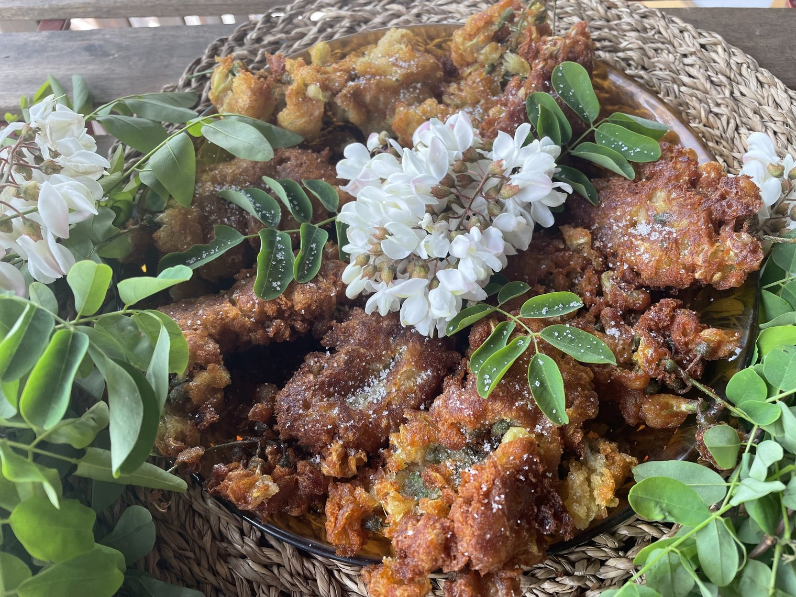

Flor de acacia frita
Ingredientes
4×
- 12 racimos de flor de acacia
- 100 g de harina
- 1 huevo
- 150 ml de agua con gas
- 1 pizca de sal
- aceite
- azúcar
- miel

Preparación
Paso 1
Limpiar 12 racimos de flor de acacia sacudiéndolos bien, sin lavarlos.
Paso 2
Mezclar 100 g de harina, 1 huevo, 150 ml de agua con gas y 1 pizca de sal hasta obtener una masa ligera.
Paso 3
Rebozar los racimos en la masa y freírlos en aceite caliente hasta que estén dorados. Escurrir sobre papel.
Paso 4
Servir espolvoreados con azúcar o un chorrito de miel.
Resumen
12 racimos de flor de acacia
Limpiar
100 g de harina
1 huevo
150 ml de agua con gas
1 pizca de sal
Mezclar
aceite
azúcar
miel
Rebozar freírlos